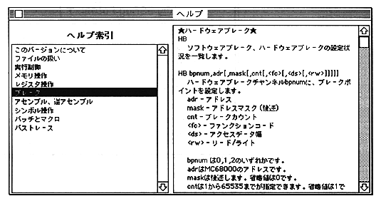
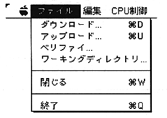

Return to previous page ｜ Return to menu ｜ Go to next page
- "Help" opens the following help window.
Click on the item you want to see in the "Help Index" on the left. The contents of the item are displayed in the area on the right side of the window.

-
File menu
- This is a menu for items related to file operations.

-
● Download
- Corresponds to the console command R, RB, RM, BA command. All file loading operations such as user programs, symbols, macros, and batches can be performed from this menu.
Return to previous page ｜ Return to menu ｜ Go to next page